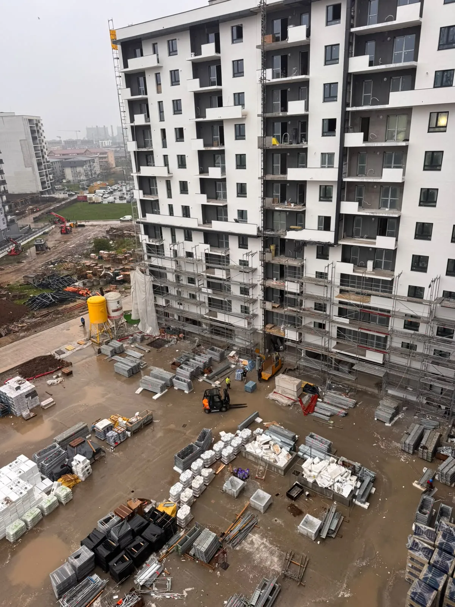
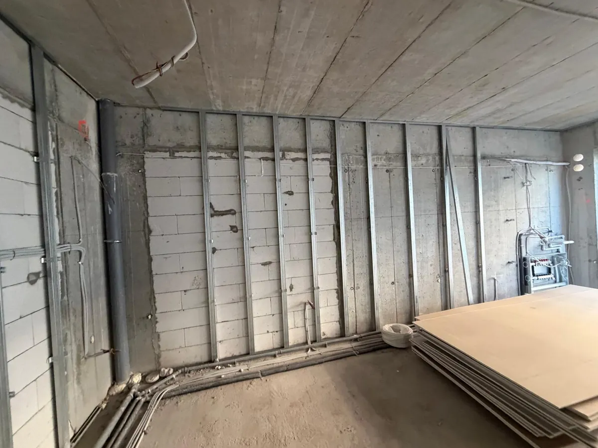
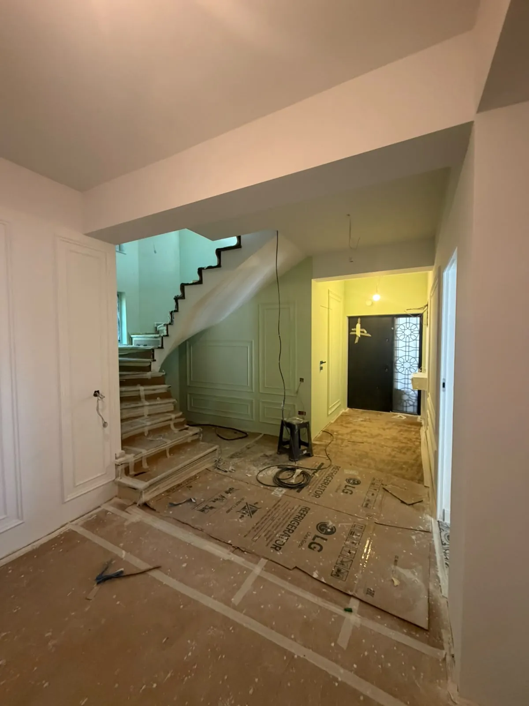
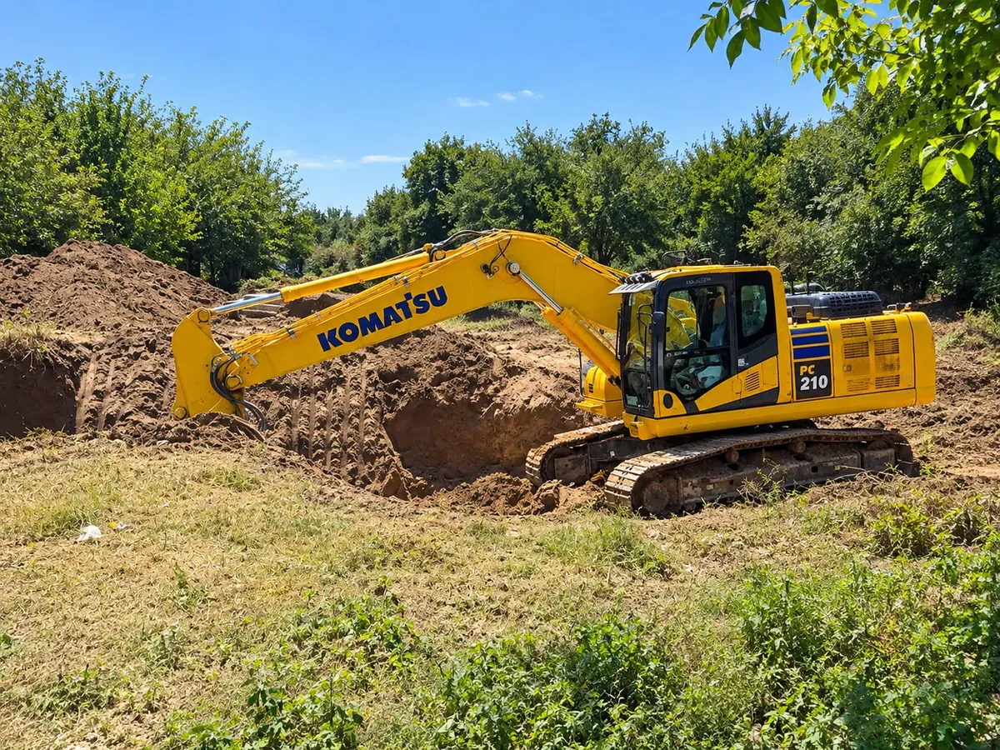
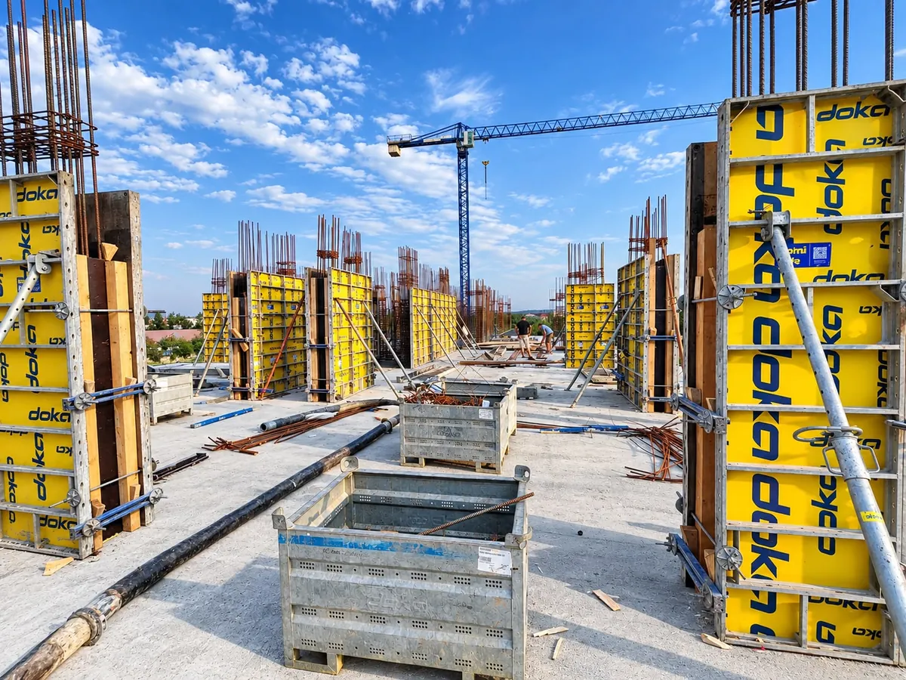
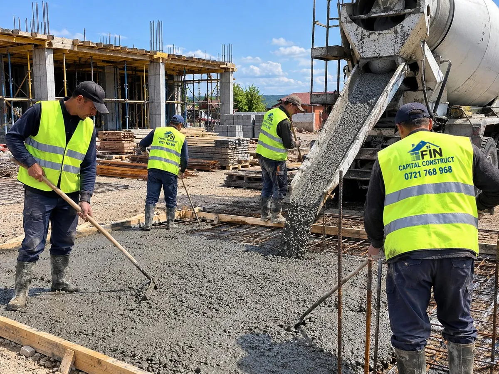
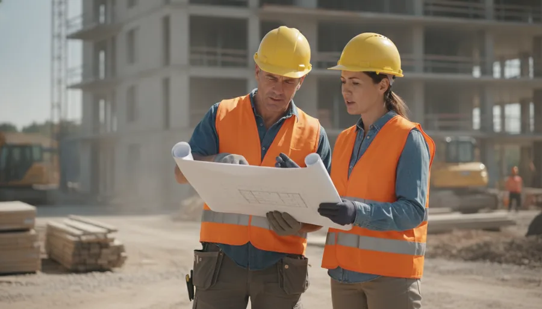
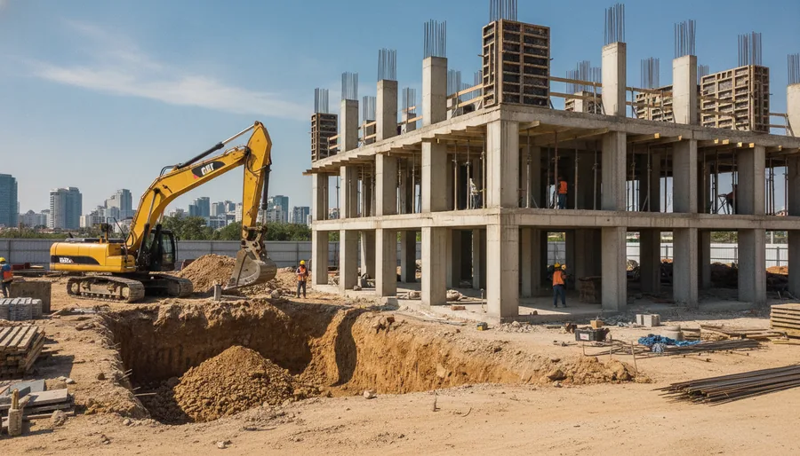
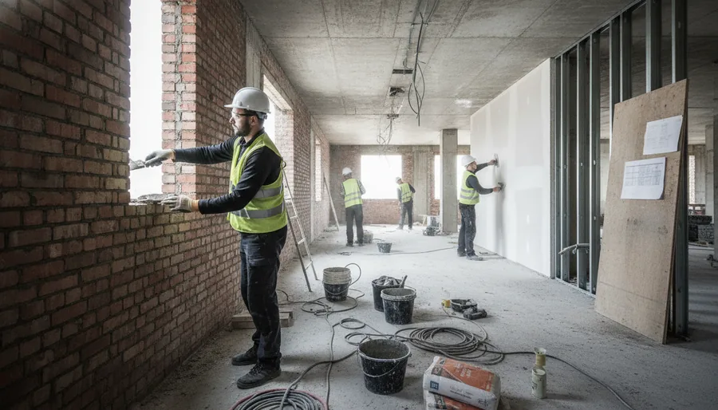
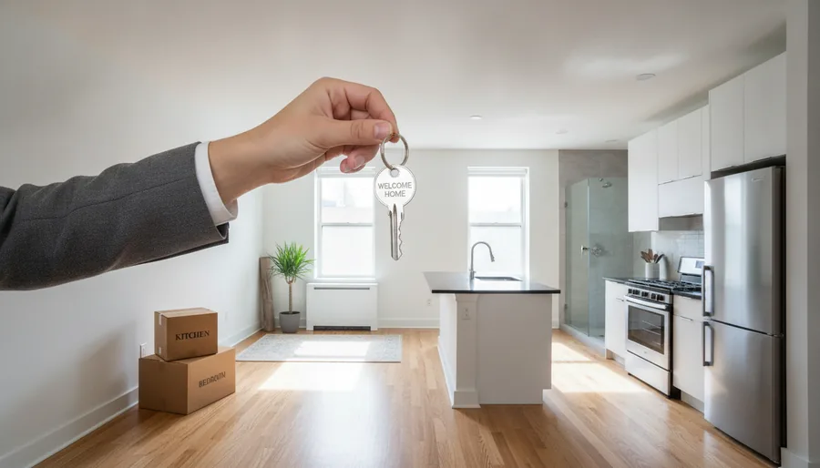

Construcții civile

Executăm construcții civile și industriale pe tot ciclul lucrării — terasamente, structuri de beton armat, zidărie, instalații și finisaje interioare — cu echipă proprie și respectarea termenelor.
Solicită ofertă →De la terasamente și structuri de beton armat, la zidărie, instalații și finisaje interioare — executăm lucrarea completă, cu echipă proprie și control atent al calității la fiecare etapă.








De la pregătirea terenului și structura de rezistență, la zidărie, instalații și finisaje — coordonăm întregul proces cu o singură echipă. Apasă pe un serviciu pentru detalii.

Despre noiConstrucții civile și industriale — structuri de beton armat, zidărie și finisaje, cu echipă proprie și seriozitate.
Finalizare
Ducem lucrarea până la finisajul final și predăm spații gata de locuit, curate și verificate.


Fiecare lucrare începe cu verificarea terenului și a proiectului. Coordonăm toate etapele cu echipă proprie, de la fundație până la predarea spațiilor finisate.
Pregătirea terenului, săpături pentru fundații și execuția fundației de beton armat, cu control atent al cotelor și al armării.
Cofrare, armare și turnare de planșee și stâlpi, urmate de zidărie și compartimentări — structura de rezistență a clădirii.
Instalații la roșu, tencuieli, gleturi, parchet, scări și finisaje decorative — până la predarea spațiilor gata de locuit.
Imagini din lucrările executate — structuri de beton armat, construcții civile, zidărie și finisaje interioare.


Rezultatul depinde de succesiunea corectă a etapelor și de verificarea continuă a calității.
Analizăm proiectul și condițiile din teren.
Fundații și structura de beton armat.
Închideri, instalații și finisaje interioare.
Verificare finală și predarea lucrării.

Discutăm proiectul, verificăm accesul și condițiile din teren și stabilim etapele lucrării. Revenim cu o ofertă clară, adaptată tipului de construcție și cerințelor tale.

Executăm terasamentele, fundațiile și structura de rezistență din beton armat — cofrare, armare și turnare de planșee și stâlpi, cu control atent al calității.

Continuăm cu zidăria și compartimentările, instalațiile la roșu și finisajele interioare — tencuieli, gleturi, parchet, scări și finisaje decorative.

Verificăm lucrarea, curățăm amplasamentul și predăm spații gata de folosit, la standardul convenit — o lucrare dusă până la capăt.
Spune-ne tipul lucrării și ce ai de construit — revenim cu o ofertă.
Solicită ofertă →Confidențialitate & Cookie-uri: Folosim cookie-uri pentru funcționarea optimă și siguranța tehnică a site-ului conform normelor GDPR. Continuarea navigării implică acordul dvs.